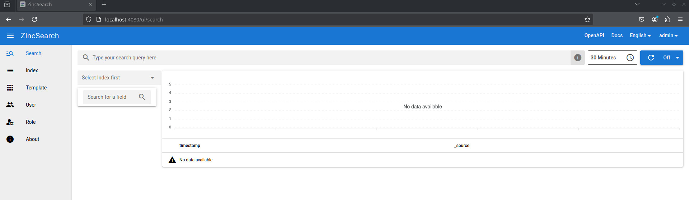
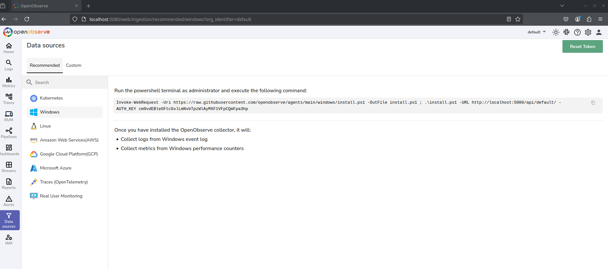
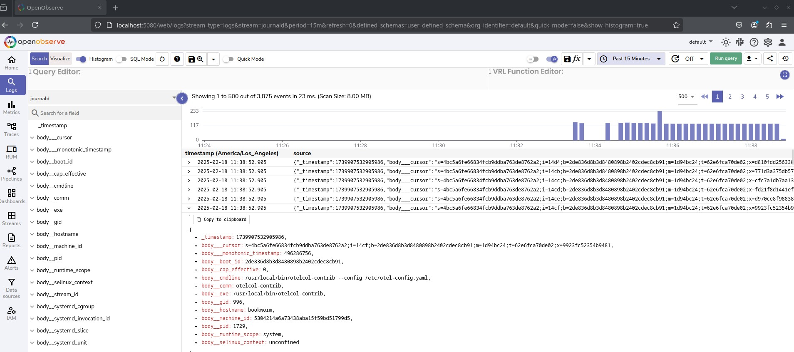

Logging solutions for CCDC
Intro
At Cal State Northridge, I am part of a team that participates in the wrccdc cybersecurity competiion. It’s a blue team competition, that involves securing machines, but also writing “incident responses” when machines are hacked.
In order to write a good incident response, you need, at minimum, the timestamp, what was done, the user, and the ip address. If you do write a good incident response, then you can get up to half of the points you lost from getting hacked back.
In order to collect and save this information, we need some kind of logging solution, that we can search and extract data from.
Promising Options
https://datalust.co/pricing https://github.com/librenms/docker#syslog-ng-container https://corelight.com/ https://en.wikipedia.org/wiki/Zeek https://malcolm.fyi/ https://docs.zeek.org/en/master/about.html#what-is-zeek https://github.com/aquasecurity/tracee https://learn.microsoft.com/en-us/sysinternals/downloads/procmon
Central Logging Server
Firstly, we need some kind of central logging server. I really like options like graylog, or even better is wazuh, which is a full “Endpoint Defense System” (EDR), which collects data with a security focus and lets you search it.
However, both of those options have a big downside, which is that the underlying software they use, Elasticsearch, Logtash, and Kibana (ELK stack) are very resource intensive, and somewhat unsuitable for every competition machine.
Zinc
Zinc is the most promising option. It is a super lightweight version of Elasticsearch and Kibana, and boasts a compatible API (although I think we won’t need that right now).
The documentation is excellent, and deployment is easy:
From the quickstart
docker run -v /full/path/of/data:/data -e ZINC_DATA_PATH="/data" -p 4080:4080 \
-e ZINC_FIRST_ADMIN_USER=admin -e ZINC_FIRST_ADMIN_PASSWORD=Complexpass#123 \
--name zincsearch public.ecr.aws/zinclabs/zincsearch:latestAnother important thing is log ingestion. Although I don’t recognize most of the options there, I do recognize syslog, which is a general protocol for forwarding logs around. However, this setup seems to require syslog-ng 2.32 or newer, which is not available on all operating systems.
Perhaps this software could be used in combination with fluentd, which can intake syslog and output it to an elasticsearch source.
Expand/Collapse Testing
I spun up a podman container with:
podman run -it --rm -p 4080:4080 -e ZINC_FIRST_ADMIN_USER=admin -e ZINC_FIRST_ADMIN_PASSWORD=password public.ecr.aws/zinclabs/zincsearch:latestAnd it was up instantly:

OpenObserve
Openobsever is similar to Zinc, a lightweight alterntive to an Elasticsearch. It also seems to be able to ingest syslogs directly.
They also seem to have a docker quickstart.
Expand/Collapse testing
podman run -e ZO_DATA_DIR="/data" --network=host -e ZO_ROOT_USER_EMAIL="root@example.com" -e ZO_ROOT_USER_PASSWORD="password" docker.io/openobserve/openobserve:latestSimilar to Zinc (I think they’re by the same people), it comes up very quickly.

It also seems to come with script which I can run on Linux or Windows machines, that will install an agent to ingest logs.
I spun up a debian vagrant machine as a test, so I can run the command.
curl -O https://raw.githubusercontent.com/openobserve/agents/main/linux/install.sh && chmod +x install.sh && sudo ./install.sh http://192.168.121.1:5080/api/default/ cm9vdEBleGFtcGxlLmNvbTpzWlAyMXF1VFpCQmFpa3hpAlthough I love the ease of install, the search interface is unintuitive, and it doesn’t seem to log anything other than this one bit about the logging process itself.

Well, there also seems to be a “default” cateogry, which informs me of apt upgrades but not much else.
I attempted to install SysmonForLinux, but the logs that generates don’t seem to be forwarded by default. It seems like the OpenObserve agent catches journald and apt logs, but not actual syslogs.
I can forward syslogs though, by having openobserve act as a syslog server
apt install rsyslogForward journald messages to syslog, and then I could forward syslog messages to a remote server using rsyslog.
And for a brief period, logs were working, but then they deleted themselves and I can no longer search for them. The issue seems to be somehow related to SysmonForLinux, because after disabling that, it works.
Signoz
Signoz is another FOSS central logging service.
It can collect syslogs
It looks to have a much more usable search interface.
Loki
Loki, by grafana, is a another log aggregator. But it seems to be a bit bigger and more complex than what we want.
Windows
Collection
Sysmon
Sysmon is a popular solution for process monitoring on Windows. It is very useful, and very powerful as is, but I would like some kind of way to forward logs to a Security Information and Event Management (SIEM) solution in the future.
Forwarding
Fluentd
Fluentd is a software for collecting and forwarding logs, and it seems to be able to collect the Windows event logs. However, I don’t know how useful that kind of log is, and I don’t know if Sysmon counts as that type of log.
Windows Syslog
winsyslog, by the developers of rsyslog.
Linux
Collection
With Linux, there are two ways to do log collection that are superior: Hooking into the kernel and listening to syscalls/file interactions, or epbf which can do something similar. Other, polling based solutions for logging, may not work because they may be too slow and miss events, and they may not offer the performance we need.
Falco
Falco is a security solution that works by collecting logs and forwarding them
What I really like about Falco, is the fact that it can be deployed as a container, yet it still hooks into the host system and collects logs.
docker pull falcosecurity/falco:latest
docker run --rm -it \
--privileged \
-v /var/run/docker.sock:/host/var/run/docker.sock \
-v /proc:/host/proc:ro \
-v /etc:/host/etc:ro \
falcosecurity/falco:latestIn addition to that, it can forward it’s collected logs to elasticsearch, zincsearch, or syslog.
SysmonForLinux
SysmonForLinux is a (now) Microsoft project that brings sysmon to Linux. It also seems to output to syslog by default.
Expand/Collapse Testing
Installing it was simple, I followed the install instructions for Debian 12.
Then, I started the service.
To view the syslogs, I can use:
cat /var/log/syslog | /opt/sysmon/sysmonLogView | lessAlthough sadly, it does not seem to inform me of ssh processes, it does give quite a bit of information, mainly about processes being started and stopped. Here is a sample:
Event SYSMONEVENT_CREATE_PROCESS
RuleName: -
UtcTime: 2025-02-18 19:59:41.656
ProcessGuid: {5304214a-e6ad-67b4-a5e6-724d9e550000}
ProcessId: 2701
Image: /opt/sysmon/sysmonLogView
FileVersion: -
Description: -
Product: -
Company: -
OriginalFileName: -
CommandLine: /opt/sysmon/sysmonLogView
CurrentDirectory: /var/log
User: root
LogonGuid: {5304214a-0000-0000-0000-000001000000}
LogonId: 0
TerminalSessionId: 5
IntegrityLevel: no level
Hashes: SHA256=ac099d5fd9305b8c68f247415aebc56d35af953ede6782856b8e1c206efaad87
ParentProcessGuid: {00000000-0000-0000-0000-000000000000}
ParentProcessId: 1713
ParentImage: -
ParentCommandLine: -
ParentUser: -Forwarding
Fluentd
Fluentd seems to support syslog collection.
Rsyslog
Rsyslog uses the syslog protocol to forward logs around. However, not all software supports ingesting syslogs.